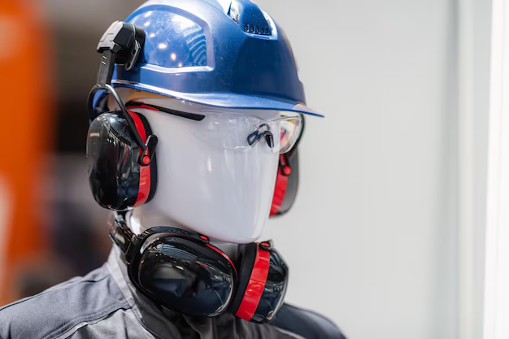
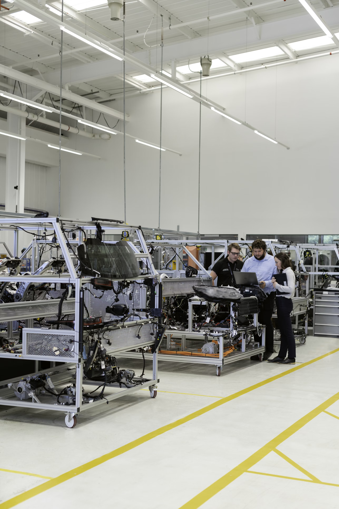

Прозрачная и комфортная процедура СОУТ
Вы заранее ознакомитесь со списком исходной документации
И сможете собрать её в комфортном темпе. Мы также пришлём шаблон приказа о создании комиссии с графиком проведения СОУТ
Для замеров к вам приедут опытные специалисты
С полным комплектом оборудования. Все показатели зафиксируем — в случае претензий от ГИТ вы сможете подтвердить результаты
Вы заранее ознакомитесь со списком исходной документации
И сможете собрать её в комфортном темпе. Мы также пришлём шаблон приказа о создании комиссии с графиком проведения СОУТ
Стоимость расследования несчастных
случаев
Стоимость будет отличаться в зависимости от степени тяжести НС, наличия у заказчика нужной документации и других обстоятельств. При расследовании несчастных случаев мы предлагаем три пакета услуг.
Лаборатория аккредитована на все виды исследований для СОУТ


Оценка профрисков для разработки внутренних норм выдачи СИЗ
В оценке профессиональных рисков важно отражать точную деятельность сотрудника. Это будет обоснованием для закупки СИЗ и возможности компенсации, согласно постановлению 767н.
Разработка внутренних норм выдачи СИЗ на основе единых типовых норм (ЕТН) производится с учетом результатов специальной оценки условий труда (СОУТ) и оценки профессиональных рисков (ОПР).
Если в оценке профессиональных рисков не отражены важные факторы (например, низкие температуры) или оценка профрисков не проводилась вообще, вам будет сложно обосновать закупку нужных СИЗ.

В оценке профессиональных рисков важно отражать точную деятельность сотрудника. Это будет обоснованием для закупки СИЗ и возможности компенсации, согласно постановлению 767н.
Разработка внутренних норм выдачи СИЗ на основе единых типовых норм (ЕТН) производится с учетом результатов специальной оценки условий труда (СОУТ) и оценки профессиональных рисков (ОПР).
Если в оценке профессиональных рисков не отражены важные факторы (например, низкие температуры) или оценка профрисков не проводилась вообще, вам будет сложно обосновать закупку нужных СИЗ.

В оценке профессиональных рисков важно отражать точную деятельность сотрудника. Это будет обоснованием для закупки СИЗ и возможности компенсации, согласно постановлению 767н.
Разработка внутренних норм выдачи СИЗ на основе единых типовых норм (ЕТН) производится с учетом результатов специальной оценки условий труда (СОУТ) и оценки профессиональных рисков (ОПР).
Если в оценке профессиональных рисков не отражены важные факторы (например, низкие температуры) или оценка профрисков не проводилась вообще, вам будет сложно обосновать закупку нужных СИЗ.